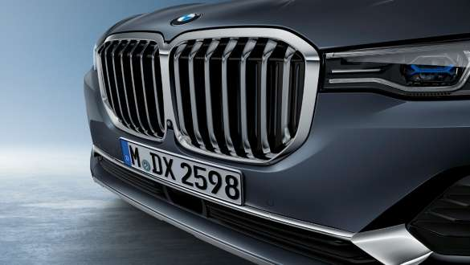
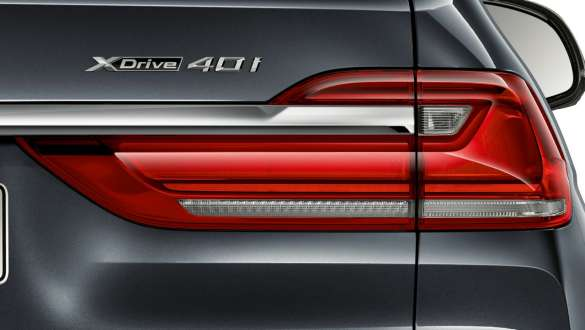
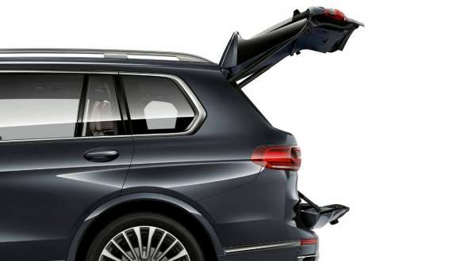
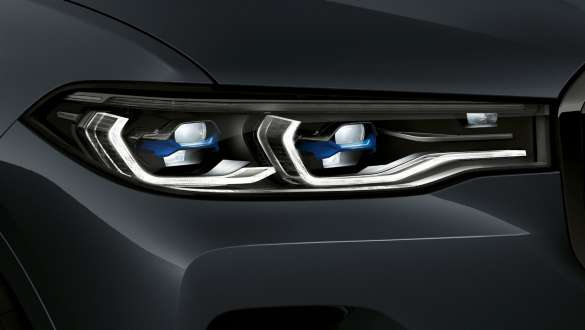
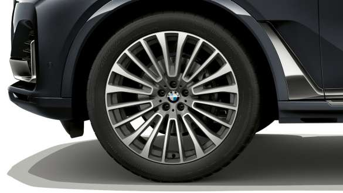
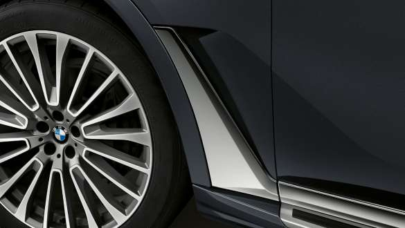

BMW Kidney GrilleAs the central visual headlight, the BMW kidney grille underliines the presence and asethetics of the vehicle in the front view |
Slim Rear LED LightsStriking narrow full-LED rear Lights set a amodern statememt with their three-dimensional desing |
Two part Electric TailgateBoth the upper and lower part of the Tailgate can be opened and closed electrically. |
|---|---|---|
BMW Lser LightIn laser high-beam mode, BMW Laserlight in a unique X design illuminates a range of up to 600m. |
22" light alloy wheels22" light alloy wheels multispoke style 757 Bicolor ferric grey with mixed tyres. |
Air BreatherThe air breather behind the front wheel arches with the hockey stick extended to the rear visually underlines the asethetics character and the length of the vehicle. |